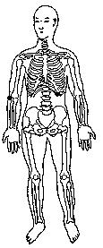

|
Energia da Função do Diafragma.
Toque o centro da mão com os dedos da outra mão. ou
M.d. toque no peito na parte inferior da caixa torácica esquerda TSE 14;
M.e. sobre a dobra externa do cotovelo direito na direção do polegar TSE 19.
|
 |
Notas:1 - M.d. = mão direita M.e. = mão esquerda.
2 - O texto sublinhado indica que pode ser feito usando alternadamente o lado
direito (mão direita) e depois o lado esquerdo (mão esquerda).
3 - Tocar a área indicada, com a ponta dos dedos da mão, durante
alguns minutos ou até sentir uma pulsação rítmica.
Não precisamos nos preocupar em demasia com a precisão da área
indicada, pois cada trava de segurança da energia tem uma abragência
de uns sete centímetros em torno de si.